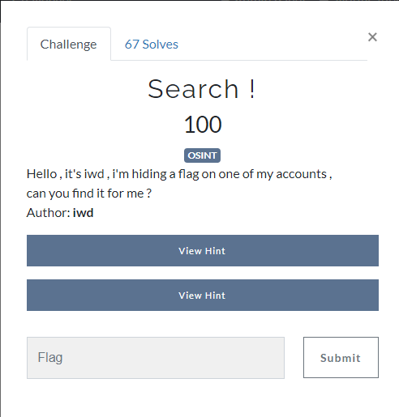
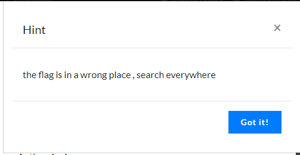
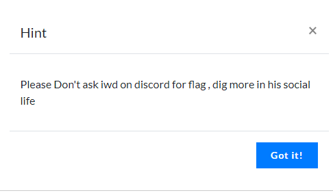

So basically find account of ‘iwd’ on the internet.
Very good tool to find accounts on the internet is: Sherlock
$ python3 sherlock iwd --print-found > accounts.txt
Searching for account iwd yielded many results but none of them seemed to give answer to the challenge, so i started from scratch.
I searched for the official website of the team that made this ctf: from Sousse, with love
There is a team section showing all team members. Bingo, there he is: iwd
He has only FB and Instagram links. Facebook is broken and Instagram doesn’t have anything resulting in a flag. But we have his name.
Basis google search yields couple answers. We are looking for social accounts so best matches are LinkedIn (flag not there) and Youtube.
I searched his videos and comments but nothing useful there. He has a Youtube About page. The only interesting thing there is the e-mail. You have to be logged-in and solve a Captcha to view it but there is the flag :)
Posedion{U_Sh0uld_D1g_B3tt3r}